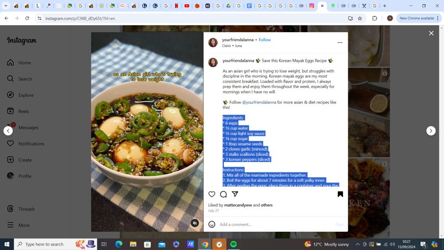
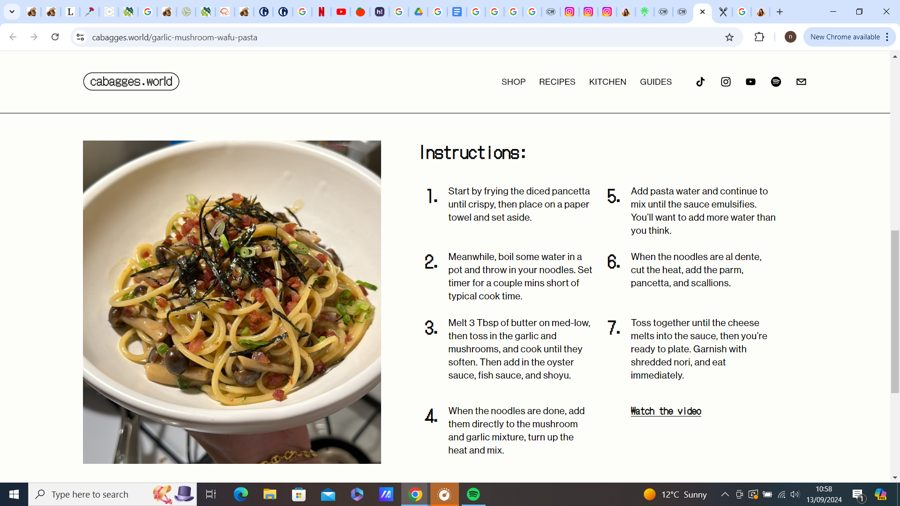
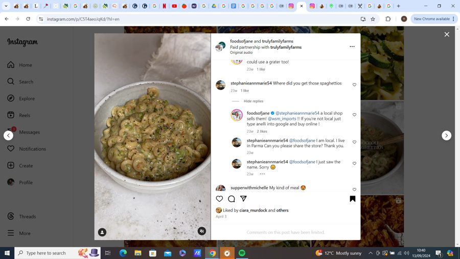
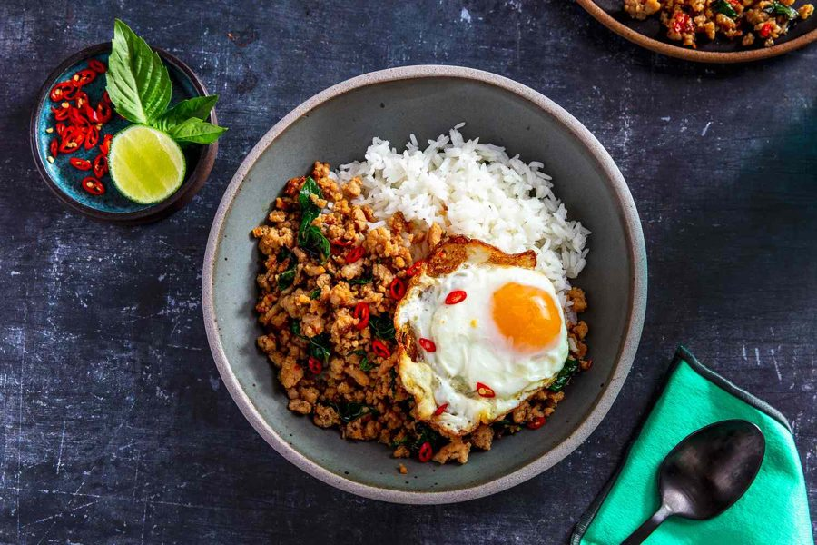
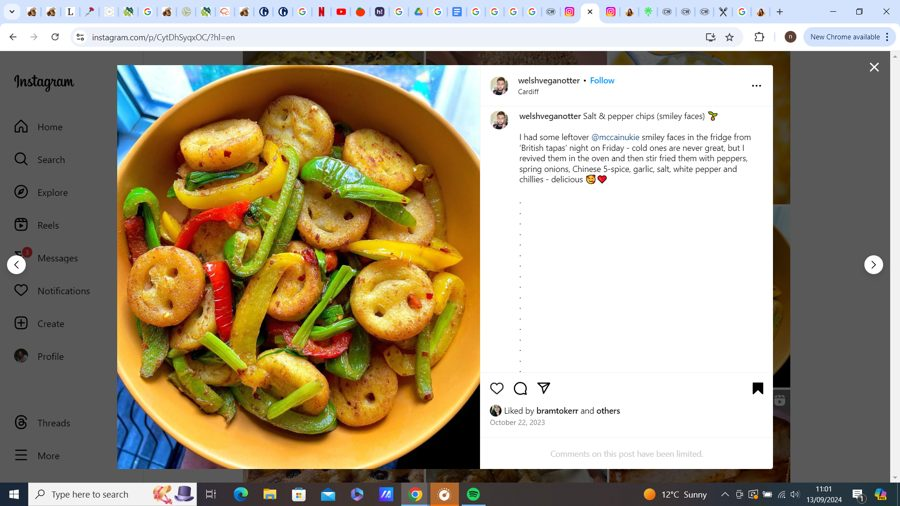
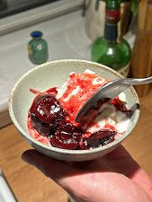

Heat oil in a pan over medium heat. Add ½ medium onion and cook. Then add 2 garlic cloves (minced) and 2 tsp ginger (grated) and cook until fragrant. Add 2 green onions, 80g chopped cabbage, ½ medium carrot and 40g mushrooms - cook until softened (about 3 mins). Add the minced meat, ½ tsp salt, ½ tsp black pepper, 1 tbsp soy sauce, 1 tsp sugar, 1tbsp sesame oil, some MSG and cook until brown. Don’t worry if the filling is not completely cooked.
Wrap the filling in rice papers (double wrapped).
Prepare skirt mix by mixing ¼ cup of water, 1 tsp plain flour, 1sp cornstarch
Cook dumplings:
Pan:
Heat non-stick pan with oil. Brush tops of dumplings with excess oil. Cook dumplings until golden brown and crispy, and then flip them over.
Pour the slurry in one section of the pan and swirl around the pan to even spread around. Do not let the slurry touch the tops of the dumplings. Do not touch the dumplings and let them cook until the liquid has evaporated and bottoms are golden brown (approx 5 mins).
Airfry:
Preheat air fryer to 200c. Lightly brush the dumplings with oil. Cook for 8 - 13 minutes, flipping halfway through.
Make marinade by combining the garlic, green onion, soy sauce, sugar, water, sesame oil, sesame seeds, and ground black pepper in a large bowl. Mix it well with a spoon until the sugar is well dissolved.
Add the sliced beef and mix everything by hand until the beef is covered in the marinade. Keep in the fridge at least 30 minutes.
Cook on a pan or a grill, and transfer to a plate or a cast iron plate to serve with rice, lettuce, ssamjang, and more side dishes.
To eat, wrap a spoonful of rice, a piece of bulgogi, and a little bit of ssamjang in a lettuce leaf. Fold it over and eat. Repeat!
Bulgogi (with pear) (approx 325 - 350 cals without rice - if serves 4)
Ingredients
450g skirt steak, tenderloin or top sirloin, slice into ⅛ inch-thick slices
½ cup of crushed Korean pear (aka “Asian pear”), or bosc pear
You can grill, pan-fry, or BBQ right after marinating, but it’s best to keep it in the fridge and let it marinate for at least 30 minutes, or overnight for a tougher cut of beef.
Grill over medium-high heat. Best is over an open flame on a grill or cast iron grill pan or skillet, but stir-frying will also work, if that’s all you have.
Serve with Korean side dishes (banchan) like kimchi as well as lettuce, ssamjang, and garlic cloves to make lettuce wraps, like I do in the video. Just put some meat on a lettuce leaf with some ssamjang and a clove of garlic, wrap it up and eat it in one bite! Everyone makes their own wrap, one by one, until they are finished.
Vegetarian bulgogi:
Use the same marinade above and replace beef with mushrooms. You’ll need 10-12 large dried shiitake mushrooms. Add a few white mushrooms if you like them.
Soak the dried shiitake mushrooms in warm water for several hours until they’re soft.
Squeeze out any excess water and slice each mushroom thinly.
Start by preheating your oven to 175c. Pat the chicken legs dry and season both sides generously with salt and pepper.
Heat a generous amount of neutral oil over medium-high heat in a pan and add in the chicken legs skin side down. Sear skin
side down for 5 minutes until brown, then flip over and sear for another 3 minutes. Remove then set aside.
In the same pan over medium heat, add onions, garlic, ginger, and chilis and sauté until onions are just translucent (about 1 minute).
Add in the tomato paste and mix. Continue cooking until slightly brown (about another 1-2 minutes).
Turn heat up to high, then pour in chicken stock to deglaze, then the coconut milk, soy sauce, lime juice, and brown sugar. Then add in the peppercorns.
Bring to a boil, then lay in chicken legs skin side up and place in the oven to braise, uncovered, for 45 minutes.
Remove from the oven, remove chicken legs and set aside, and bring the remaining braising liquid to a boil and reduce by about half.
Plate your chicken leg, spoon over the sauce, and garnish with a handful of fresh cilantro leaves.
Miso aubergine
Ingredients
1 aubergine
1 miso packet
Maple syrup
Soy sauce
10ml mirin
Instructions
Preheat oven to 200c
Cook for 20 minutes
Then add marinade and cook for 20 more mins
Soy glazed salmon:
Reduce 225ml soy sauce, 2 tablespoons toasted sesame seeds, 100g brown sugar, pinch of cayenne pepper over high heat until consistency of maple syrup.
5–6 tbsp of yuzu honey marmalade or jam, depending on how sweet you like it
2 tbsp white miso
1 tbsp soy sauce
1/2 tbsp rice vinegar
1/2 tsp salt
1/4 tsp sansho or black pepper
3–4 garlic cloves, minced
1/2 tbsp ginger, minced
1/2 tbsp perilla or sesame oil
1/2 tsp sriracha, optional
green onions, for garnish
Instructions
Marinate: In a bowl or bag, combine yuzu marmalade, miso, soy sauce, vinegar, salt, pepper, garlic, ginger, oil, and sriracha (if using). Add chicken and coat well. Marinate for at least 30 minutes or up to overnight in the fridge.
Cooking:
Air Fryer: preheat to 375°F (190°C).
First Cook: Place drumsticks in the air fryer basket in a single layer. Cook for 8 minutes.
Glaze + Cook Again: Brush with more marinade, then air fry for another 5 minutes.
Flip + Finish: Flip the chicken and cook for another 8 minutes or until the internal temperature reaches 165°F (74°C).
Char (Optional): Increase temperature to 400°F (200°C) and air fry for 2 minutes, or until slightly charred to your liking.
Oven:
Cook at 190c for 30 - 35 minutes, flipping halfway while brushing on the glaze
Serve: Garnish with sesame seeds and enjoy hot.
Fish sauce teriyaki chicken (serves 3 - 4)
Ingredients
¼ cup sake
4 Tbsp mirin
4 boneless, skin-on chicken thighs
2 lemon wedges
1 tsp sesame oil
2 tsp sugar
1 scallion, finely chopped
Instructions
Season chicken with salt and place skin-side down in a cold pan. Heat to medium.
Once browned, flip and cook through. Remove and rest.
Drain excess fat and deglaze pan with sake. Add fish sauce, mirin, sugar, sesame oil, and pepper. Mix.
Boil, reduce heat, and simmer until sauce thickens.
Serve chicken topped with sauce. Garnish with scallions and lemon wedges.
Korean Gochujang Chicken (Serves 3 - 4, approx 490 calories without rice)
Ingredients
3 tablespoons honey
3 tablespoons gochujang (Korean chili paste)
1 tablespoon soy sauce (use coconut aminos for paleo)
1 teaspoon sesame oil
1 teaspoon finely minced ginger
2 cloves garlic, finely minced
1½ lbs chicken thighs (approx 4 thighs)
Sesame seeds and sliced green onions (for serving)
Instructions
Place kimchi and brine into pot. Add pork and onion.
Slice 2 green onions diagonally and add to pot
Add sugar, salt, hot pepper flakes, hot pepper paste, sesame oil and anchovy stock
Cover and cook for 10 minutes of medium high heat
Open and mix, lay the tofu over the top
Cover and cook for another 10 to 15 mins over medium heat
Add green onion ontop
Dakbokkeumtang (approx 750 - 800 calories without rice)
Ingredients (approx 4 servings)
1kg chicken wings or thighs
¼ cup soy sauce
¼ cup minced garlic
¼ cup hot pepper paste (gochujang)
¼ cup korean hot pepper flakes (gochugaru)
1 tbsp sugar
2 or 3 medium sized onion (2 cups worth) cut into chunks
3 or 4 large potatoes (about 600g)
2 green onions
2 green chilli peppers
Chicken stock cube
Instructions
Seasoning paste:
Make seasoning paste by mizing soy sauce, minced garlic, hot pepper paste, hot pepper flakes and sugar.
Add onion.
Cook the Chicken:
Cook thighs on cold pan
Or add chicken wings to the paste and cook.
Add 2 cups of water and chicken stock, cook for 20 minutes.
Cut veg:
Cut potatoes, chilli, carrot and green onion.
Add potatoes:
Add potatoes and chilli and carrot after 20 minutes. Cook for another 20.
Open lid and cook for another 3-5 minutes to boil away some broth.
Occasionally spoon broth over the top
Kimchi stew (approx 375 calories without rice)
Ingredients
450g kimchi
¼ cup kimchi brine
225g pork shoulder or belly
½ package of tofu
3 green onions
1 medium onion
1 tsp salt
2 tsp sugar
2 tsp gochugaru
1 tbsp gochujang
1 tsp toasted sesame oil
2 cups anchovy stock
Instructions
Seasoning paste:
Make seasoning paste by mizing soy sauce, minced garlic, hot pepper paste, hot pepper flakes and sugar.
Add onion.
Cook the Chicken:
Cook thighs on cold pan
Or add chicken wings to the paste and cook.
Add 2 cups of water and chicken stock, cook for 20 minutes.
Cut veg:
Cut potatoes, chilli, carrot and green onion.
Add potatoes:
Add potatoes and chilli and carrot after 20 minutes. Cook for another 20.
Open lid and cook for another 3-5 minutes to boil away some broth.
Occasionally spoon broth over the top
Anchovy stock
Ingredients
7 large dried anchovies, heads and guts removed
⅓ cup of korean radish, or daikon radish
4x5 inch dried kelp
3 green onion roots
4 cups of water
2 cups anchovy stock
Instructions
Optional: dry roast anchovies in pot over medium heat for few minutes until they smell nutty. Enhances flavour.
Boil for 20 minutes over medium high
Lower hear for another 5 mins
strain
Marinated korean eggs

Ingredients
6 large eggs
½ cup water
½ cup light soy sauce
¼ cup sugar
1 tablespoon sesame seeds
2 cloves garlic, minced
3 stalks scallions, sliced
3 Korean peppers, sliced
Instructions
Prepare the Marinade:
In a medium bowl, mix together the water, light soy sauce, sugar, sesame seeds, minced garlic, sliced scallions, and sliced Korean peppers until the sugar is dissolved.
Boil the Eggs:
Bring a pot of water to a boil. Gently add the eggs and boil for about 7 minutes for a soft, yolky interior.
Prepare the Eggs:
After boiling, transfer the eggs to an ice bath or run them under cold water to stop the cooking process. Once cooled, carefully peel the eggs.
Marinate the Eggs:
Place the peeled eggs in a container and pour the marinade over them, ensuring the eggs are fully submerged.
Refrigerate:
Cover the container and let the eggs marinate in the refrigerator overnight for the best flavor.
6 large eggs, at room temperature (adjust quantity as needed)
3 tablespoons light soy sauce
1 tablespoon dark soy sauce (optional, for deeper color)
2 tablespoons mirin (sweet rice wine)
120 ml (½ cup) water
Instructions
Boil the Eggs:
Bring a pot of water to a rolling boil. Gently lower the room-temperature eggs into the boiling water using a spoon.
Set a timer for 6 minutes for a slightly runny yolk, or adjust the cooking time as desired (7 minutes for a slightly firmer yolk).
Ice Bath:
Immediately after boiling, transfer the eggs to a bowl filled with ice water. This stops the cooking process and ensures a soft yolk.
Let the eggs chill in the ice bath for at least 15 minutes.
Prepare the Marinade:
While the eggs chill, combine the light soy sauce, dark soy sauce (if using), mirin, and water in a small saucepan or container.
Heat the marinade gently over low heat until just simmering. Remove from heat and let cool slightly.
Marinate the Eggs:
Carefully peel the cooled eggs. Gently crack the shells all over to help the marinade penetrate.
Place the peeled eggs in a jar or container with a tight-fitting lid. Pour the cooled marinade over the eggs, ensuring they are completely submerged.
Refrigerate:
Refrigerate the marinated eggs for at least 12 hours, ideally longer for a deeper flavor. The longer they marinate, the richer the flavor becomes, and the yolk will develop a jammier consistency.
The eggs will keep well in the refrigerator for up to 3-5 days.
Serve:
Once ready to serve, remove a marinated egg from the jar and slice it in half with a sharp knife.
The contrast of the browned whites and vibrant yellow yolk is a delightful sight. Enjoy your ramen eggs on top of a steaming bowl of ramen, or savor them on their own with some rice.
Tips
Use room temperature eggs for even cooking; cold eggs take longer to cook and can result in uneven yolks.
Adjust the marinating time to your preference; for a milder flavor, marinate for a shorter time.
Experiment with different flavorings in the marinade, such as sake, ginger, or garlic.
Be gentle when peeling the eggs after boiling to avoid tearing the whites.
Dubu Jorim - Korean braised tofu
Ingredients
1 block firm tofu
2 tbsp cooking oil
Sauce mix ingredients:
1 - 2 tbsp soy sauce
1 tbsp brown sugar
2 tbsp chili powder
1 tbsp minced garlic
1 chopped green onion
1 tbsp sesame oil
Water as needed
Instructions
Mix sauce ingredients
Fry tofu slices
Add sauce ingredients and small amount of water if needed
Serve over rice
Oyakadon (3 servings)
Ingredients
1 onion (¼ 1 serving) - thin slices
3 green onions - cut diagonally
Roughly 3 chicken thighs
6 eggs
Seasoning ingredients:
1 cup water
1.5 tsp dashi powder
3 tbsp soy sauce
3 tbsp mirin
3 tsp sugar
Instructions
Cut chicken into bite size pieces, cut chicken along the grain into strips 2.5 cm wide then angle your knife back diagonally and slice chicke strips against the grain into flat pieces.
Crack eggs into small bowl and lightly beat the eggs.
Without turning on heat, add 1 cup water, 1.5 dashi powder, 3 tbsp soy sauce and 3 tbsp mirin to pot
Add 3 tsp sugar, onion and white part of green onion
Place chicken pieces onto top of the onion in single layer. Turn hear to medium high.
Cover with lid and cook for 3 mins
Flip chicken to cook other side. If broth is evaporating too quickly add 1 - 2 tbsp water.
Cook for additional 1 - 2 mins then reduce head to medium and open lid.
Drizzle beaten egg in a spiral pattern over chicken and onions
Sprinkle green part of onion ontop. Cook until egg just sets.
Egg drop soup (Serves 2 - 4)
approximately 109 calories. (3 servings)
Ingredients
3 British Lion Eggs
1 tbsp cornflour
3 tbsp water
1 litre chicken stock
1 handful spring onions
1 tsp sesame oil
½ tsp white pepper
Pinch of salt
Instructions
Whisk eggs in a bowl. In another bowl, mix cornflour and water into a slurry.
Heat chicken stock, add the white parts of spring onions and the slurry. Stir in sesame oil, pepper, and salt. Bring to a boil.
Lower heat and pour in the whisked eggs, forming egg petals. Add remaining spring onions.
Garlic Mushroom Wafu Pasta
approximately 710 calories (serving 2)

Ingredients
2 servings spaghetti
1 pack pancetta, diced
6 cloves garlic, minced
1 pack beech mushrooms, sliced
1/4 cup grated Parmesan cheese
2 tsp shoyu (Japanese soy sauce)
2 tsp fish sauce
4 tsp oyster sauce
4 tbsp butter
Scallions, chopped (for garnish)
Shredded nori (for garnish)
Pasta water (as needed)
Instructions
Fry the Pancetta: In a skillet, fry the diced pancetta over medium heat until crispy. Transfer to a paper towel-lined plate and set aside.
Cook the Noodles: In a pot, boil water and add the spaghetti. Cook for a couple of minutes shorter than the typical cook time as the pasta will finish cooking in the sauce.
Sauté Garlic and Mushrooms: In the same skillet used for the pancetta, melt 3 tbsp of butter over medium-low heat. Add the minced garlic and sliced mushrooms. Cook until softened, about 3-4 minutes. Stir in the oyster sauce, fish sauce, and shoyu.
Combine Pasta and Sauce: Once the noodles are done, drain them and add them directly to the mushroom and garlic mixture. Increase the heat and mix well.
Emulsify the Sauce: Gradually add pasta water while mixing until the sauce emulsifies, using more water than you think for the best consistency.
Finish the Dish: When the noodles are al dente, remove from heat. Add the grated Parmesan, crispy pancetta, and chopped scallions. Toss until the cheese melts into the sauce.
Serve: Plate the pasta immediately, garnished with shredded nori. Enjoy your delicious wafu pasta!
Korean Veggie Pancakes
Ingredients
For the Pancake Batter:
½ cup all-purpose flour
1 tbsp corn flour
½ cup water
2-2.5 cups of your favorite vegetables, sliced lengthwise (suggestions: spring onions, carrots, cabbage, onions)
For Cooking:
1-2 tbsp oil (for frying)
For the Dipping Sauce:
2 tbsp soy sauce
1 tbsp vinegar
Sesame seeds (to taste)
Gochugaru or chili flakes (to taste)
Instructions
Make the Batter: In a bowl, whisk together the all-purpose flour, corn flour, and water until smooth. Stir in the sliced vegetables until evenly coated.
Heat the Skillet: In a non-stick skillet, heat 1-2 tbsp of oil over medium heat.
Cook the Pancake: Pour the vegetable batter into the skillet, spreading it evenly into a round shape. Gently flatten the top with the back of your spatula.
Cook Evenly: Lower the heat and cook until the pancake is golden brown and cooked through on both sides, flipping halfway. Add more oil if needed.
Prepare the Dipping Sauce: In a small bowl, mix together the soy sauce, vinegar, sesame seeds, and gochugaru or chili flakes.
Serve: Slice the pancake and serve warm with the dipping sauce.
Spicy Garlicky Soy Sauce Pasta
Ingredients
400 g pasta (e.g., bucatini)
8 cloves garlic, thinly sliced
3 spring onions, thinly sliced
4 cm knob of ginger, finely chopped
1 tbsp crispy chili oil
3 tbsp soy sauce
Small handful coriander, finely chopped
Grated Parmesan cheese (for serving)
Olive oil (for cooking)
Instructions
Cook the Pasta: In a large pot, bring salted water to a boil. Cook the pasta for about 10 minutes or until al dente. Reserve ½ cup of pasta water before draining.
Prepare the Sauce: While the pasta cooks, heat a generous amount of olive oil in a large pan over the lowest heat. Add the sliced garlic and cook gently for 4-5 minutes until soft but not browned.
Add Aromatics: Stir in the finely chopped ginger, sliced spring onions, and crispy chili oil. Continue cooking on low heat until the pasta is ready.
Combine Pasta and Sauce: Once the pasta is cooked, add the reserved pasta water, soy sauce, and a pinch of salt (adjusting to taste) to the pan. Mix well until the pasta is coated and looks glossy.
Finish and Serve: Stir in the chopped coriander. Serve hot with grated Parmesan cheese on top.
Breakfast dishes
Chickpea granola (date and cinnamon)
Ingredients (4 servings)
320g cooked chickpeas, drained and really well dried
80g oats
60g chopped mix nuts
4 tbsp pumpkin seeds (for magnesium)
4 tsp dessicated coconut (optional)
4 date, soaked (if small, use 2x)
6 - 8 tsp maple syrup / honey
pinch of salt
4 tsp cinnamon
Berry compote: (1 serving)
100g Frozen fruit
Lemon
1 tsp chia seeds
honey
Instructions
mash your date into a paste — you can add a splash of the soaking water to help it along
add to a bowl with the chickpeas, oats, seeds, cinnamon, coconut, salt, maple syrup, and nuts until everything is lightly coated and a bit sticky (not wet)
air fry at 170°c for 10 minutes, shaking halfway. keep an eye on it at the end — it goes from golden to burnt quickly!
for the compote, heat the berries (I just did in the microwave) until soft and jammy, mash slightly and add chia. Maple syrup also works well here!
serve with yogurt for additional protein and calcium for your bones and muscles ladies
Rinse and pat dry the salmon fillet and lay on top of foil.
Liberally salt and pepper entire fillet.
Combine honey, grated ginger, grated garlic, orange zest and orange juice in a small bowl.
Pour over salmon fillet.
Place slices of one orange around fillet.
Bake for about 15-20 minutes or until salmon flakes easily with a fork and reaches 145 degrees. If desired place under broiler for 1-2 minutes to additional carmalize.
Pasta dishes (inc risotto)
Creamy Chickpea & Garlicky Greens Pasta Recipe (approx 800 cals serving 2, 530 - 550 cals if serves 3)
Ingredients
200g pasta
1 shallot or half a small white onion, finely diced.
200g asparagus, woody stems discarded (use the snap method), stalks finely chopped, top parts left whole.
3-5 fat cloves of garlic, minced
1 large courgette, sliced into thin half moons
480g chickpeas, from a jar or can (I don’t bother draining if the can / jar is organic and BPA free)
Butternut squash and sausage pasta soup (approx 575 - 625 cals if serves 4)
Ingredients
Roasted squash:
2 onions (cut into chunks if roast, small pieces/slices if frying)
1 small butternut squash, peeled and cubed
1-2 tsp chilli powder
4 cloves garlic
2 sprigs fresh thyme leaves
Soup:
2 tbsp olive oil
Approx 200g / 300g of pork mince, or sausages
4 garlic cloves, sliced
2 sprigs each - rosemary, sage, thyme
1 parmesan rind
1.4L vegetable or chicken stock - maybe more due to more mince and beans
2 tbsp sherry vinegar / rice vinegar
1 lemon zest
½ lemon juice
200g short pasta
6 leaves cavolo nero, stems removed and sliced
100 ml double cream
⅓ cup parmesan / 30g
Salt and pepper
200g cannellini beans
Instructions
Set the oven to 190C. Place butternut squash, onion and garlic into a roasting tin and season with thyme, chilli powder, salt, pepper and drizzle with olive oil. Mix everything together and place in the middle (not top) of the oven until golden (approx 18 mins)
Place a dutch oven/ deep saucepan on a medium heat and drizzle the base with olive oil. Add minced pork or sausages to the pan and brown. Add the sliced garlic followed by salt, rosemary, thyme, sage leaves and parmesan rind. Let this all infuse for a couple of minutes but don’t let the garlic burn.
Pour in the stock, add the lemon zest, lemon juice, sherry vinegar and season with salt and pepper. Return the lid and let this simmer gently for a couple of minutes.
Add the pasta. You can remove the sprig of thyme and rosemary at this point but keep the sage leaves they are delicious!
When the pasta is al dente add the cavolo nero and let this cook for a couple of minutes.
Remove from the heat and add the roasted veggies to the soup. Squeeze in the roasted garlic don’t waste it! You need to season again at this point and you can add more lemon juice if needed.
Stir in the cream and parmesan.
Serve instantly in bowls with a grating of parmesan, some black pepper and a drizzle of extra virgin olive oil.
Warm butter and EVOO, cook leeks for a few minutes until softened
Add risotto rice and stir for a minute, then add the mustard and apple cider vinegar
Ladle in stock and stir, once absorbed, add another ladle
When rice is al dente, add in peas for one minute and then turn off the heat
Add in the cheese and stir until melted through. Finish with chives and black pepper.
Broccoli cheese pasta soup
approximately 405 - 425 calories (serves 2)

Ingredients
2 tablespoons salted butter
1 cup anelli pasta
¾ cup finely shredded broccoli
½ cup finely shredded carrot
3 cups chicken stock
¼ cup heavy cream or whole milk
Parmesan cheese to taste
Salt and pepper, to taste
Instructions
Sauté the Vegetables:
In a skillet, melt the butter over medium heat. Add the anelli pasta, shredded broccoli, and shredded carrot. Cook for about 5 minutes, lightly sautéing the vegetables.
Cook the Pasta:
Pour the chicken stock into the skillet and cook until 90% of the liquid is absorbed and the pasta is al dente.
Add Cream and Cheese:
Stir in the heavy cream (or whole milk) to warm it, then add the sharp cheddar cheese. Stir until the cheese is melted and the mixture is creamy. Taste and season with salt and pepper as needed.
Serve:
Serve the pasta in bowls and top with fresh cracked black pepper.
Creamy Boursin Chicken Thighs with Pearl Couscous and Kale
Approx 585 - 610 cal per serving (4 servings - using 4 thighs)
Prep the Chicken: Take the chicken thighs out of the refrigerator about 20-30 minutes prior to cooking for more even cooking. Pat dry to ensure crispy skin and season generously with salt on both sides.
Sear the Chicken: Heat a skillet over medium heat. Add olive oil and butter, letting it melt. Sear the chicken thighs skin-side down for about 8-10 minutes until golden brown, avoiding movement to ensure crispiness. Flip the chicken and sear for another 15-20 minutes, or until the internal temperature reaches 165°F (74°C). Remove and set aside.
Cook Shallots: With the chicken removed, reduce the heat slightly. In the same pan, add the minced shallot and stir for 1-2 minutes until fragrant.
Toast Couscous: Add the pearl couscous to the pan and stir to combine. Let it toast for about a minute until it becomes nutty.
Deglaze: Pour in the white wine and stir until fully absorbed. Then add the chicken stock and stir.
Combine Chicken and Couscous: Increase the heat back to medium until it begins to bubble, then reduce to low-medium. Return the chicken thighs to the pearl couscous and broth mixture.
Finish the Dish: Once the pearl couscous has absorbed all the liquid, remove the chicken thighs again. Stir in the Boursin cheese and chopped kale until combined and creamy.
Serve: Taste and adjust seasoning as desired. Serve warm, optionally garnished with fresh chives or Italian parsley.
Butternut Squash & Orzo
Ingredients
1 small to medium-sized butternut squash, peeled, seeded, and diced (about 600-700g)
1 small white onion, halved
5 garlic cloves, peeled
30 ml olive oil
1 tsp salt
½ tsp black pepper
1 tsp thyme
1 tsp sage
150 ml vegetable stock
100 ml double cream
80 g grated Gruyère or Parmesan cheese
100 g fresh spinach leaves
300 g orzo pasta (or any type of pasta)
Optional toppings:
Fresh parsley, chopped
Grated Parmesan cheese
Toasted pine nuts
Instructions
Preheat the Oven: Preheat your oven to 190°C (375°F). On a baking sheet, combine the diced butternut squash, halved onions, and whole garlic cloves. Drizzle with 30 ml of olive oil and season with salt, black pepper, sage, and thyme. Roast for about 35-40 minutes or until the butternut squash is tender and slightly caramelized, and the onions and garlic are soft and browned.
Blend the Vegetables: Once roasted, transfer the butternut squash, onions, and garlic to a food processor and blend until smooth.
Prepare the Sauce: In a saucepan over medium heat, add the blended butternut squash mixture.
Simmer: Stir in the vegetable stock and double cream. Allow the sauce to simmer gently for about 8-10 minutes, stirring occasionally, until thickened. Adjust seasoning with additional salt and black pepper to taste.
Add Cheese and Spinach: Stir in the grated cheese and fresh spinach leaves, cooking until the spinach wilts and is incorporated into the sauce, about 2 minutes.
Cook the Orzo: In a separate pot, cook the orzo pasta according to package instructions until al dente. Drain the orzo.
Combine Pasta and Sauce: Toss the cooked orzo with the creamy butternut squash sauce until well combined.
Serve: Serve hot, garnished with fresh parsley, additional grated Parmesan cheese, or toasted pine nuts, as desired.
Smoked Salmon and Cream Cheese Pasta (aapprox 410 - 425 cal if 4 servings)
Ingredients
300 g (10.5 oz) pasta
25 g (¼ stick) butter
1 small red onion, finely chopped
4 cloves garlic, minced
200 g (7 oz) smoked salmon, roughly chopped
50 g white wine
180 g (6.3 oz) light Philadelphia cream cheese
Juice of ½ lemon
½ bunch chives, chopped
Freshly ground black pepper
Instructions
Bring a large pot of salted water to boil. Cook pasta 1 minute less than package instructions. Reserve 2 cups of pasta water before draining.
In a large pan, melt butter over medium heat. Sauté onion for 1 minute, then add garlic and cook for 30 seconds.
Add smoked salmon, cooking 2-3 minutes until light pink. Break larger pieces with a spatula.
Pour in white wine, cooking for 1 minute until alcohol evaporates. Stir in cream cheese, letting it melt completely; add pasta water if needed. Mix in lemon juice.
Combine pasta with the sauce, stirring until coated. Add chives, season with black pepper, and serve.
Pasta alla vodka (650 - 675 if serves 4)
Ingredients
Kosher salt
1 medium onion, finely chopped
4 garlic cloves, smashed and peeled
4 oz Parmesan cheese, finely grated
2 Tbsp extra-virgin olive oil, plus more for drizzling
1 (4.5-oz) tube double-concentrated tomato paste
½ tsp crushed red pepper flakes
2 oz (¼ cup) vodka
¾ cup heavy cream
1 lb rigatoni
Fresh basil leaves, for serving
Instructions
Boil the Water: Fill a large stock pot three-quarters full with water, add a handful of kosher salt, and bring to a boil while you prep the other ingredients.
Prepare Ingredients: Finely chop the onion and smash the garlic cloves. Grate the Parmesan cheese.
Sauté Onions and Garlic: Heat 2 Tbsp of extra-virgin olive oil in a Dutch oven or large pot over medium heat. Add the chopped onion and smashed garlic. Cook, stirring constantly, until the onions are just beginning to brown around the edges, about 5-7 minutes.
Add Tomato Paste: Stir in the tomato paste and crushed red pepper flakes. Cook, stirring often, until the paste evenly coats the onions and begins to brown, about 5-7 minutes.
Deglaze with Vodka: Pour in the vodka and stir, scraping the bottom of the pot to deglaze it. Reduce heat to low.
Warm Cream: Scoop about ¼ cup of boiling water from the pasta pot and mix it with the heavy cream to gently warm it. Slowly add the warmed cream to the Dutch oven, stirring constantly until a smooth sauce forms. Remove the pot from the heat.
Cook the Pasta: Add the rigatoni to the pot of boiling salted water and cook according to package instructions until al dente. Reserve 1 cup of the pasta water before draining.
Combine Pasta and Sauce: Add the rigatoni to the sauce in the Dutch oven along with ½ cup of the reserved pasta water. Stir to incorporate. Gradually add half of the Parmesan cheese, stirring constantly until melted and the sauce is smooth and glossy.
Adjust Seasoning: Season with salt to taste. If needed, add more reserved pasta water to thin the sauce until it coats the pasta perfectly.
Serve: Divide the pasta among bowls. Top each serving with the remaining Parmesan, drizzle with extra olive oil, and garnish with torn basil leaves.
Indian, Sri Lankan and Thai dishes
Thai rice noodle stir fry (825 - 875 per serving if serves 2 using chicken thigh, 630 cals if no chicken)
250g chicken thighs, cut into bite size pieces, or prawns or tofu
2 tsp fish sauce
1/2 carrot, cut into matchsticks
1 handful Chinese broccoli, sliced
2 - 3 spring onions, cut into 3cm lengths
1 handful of Thai basil leaves
Instructions
Soak the noodles in boiling water for 5-10 minutes until softened, then drain and rinse under cold water to stop the cooking process. If using fresh noodles, simply separate them and set aside.
In a small bowl, mix all the ingredients for the drunken noodle sauce and set aside.
Heat the oil in a wok or large pan over high heat. Add the finely chopped garlic and chillies, stir-frying until fragrant, about 30 seconds. Toss in the sliced onion and cook for an additional minute.
Add the chicken and fish sauce, stir-frying until the chicken is cooked through, around 2 minutes.
Next, add the carrot and Chinese broccoli, cooking until they begin to soften
Throw in the spring onions and noodles, pouring over the drunken noodle sauce. Stir-fry everything together until well combined, cooking for another 1-2 minutes. Turn off the heat, add the Thai basil leaves, and toss until just wilted. Serve immediately and enjoy!
1 to 1½ lbs butternut squash, peeled and cut into 2-inch pieces
1 tablespoon olive oil
Salt and pepper, to taste
For Sautéing:
3 tablespoons cooking oil
1 large red Spanish onion, finely chopped
4 large garlic cloves, minced
3-inch piece of fresh ginger, grated
For the Gravy:
2 tablespoons tomato paste
1–2 teaspoons cayenne pepper (adjust to taste)
1 tablespoon sweet paprika
½ teaspoon turmeric powder
2 tablespoons coriander powder
1 teaspoon cumin powder
½ teaspoon garam masala
2 bay leaves
1 cup coconut milk
1 cup broth or vegetable stock (240ml)
½ teaspoon kosher salt
½ teaspoon black pepper
For Finishing:
2 tablespoons lemon juice
Fresh cilantro, chopped (for garnish)
Instructions
Preheat the Oven:
Preheat the oven to 165°C. Line a baking tray with aluminum foil or parchment paper and spray with oil to prevent sticking.
Roast the Butternut Squash:
Place the diced butternut squash on the prepared baking tray. Season with salt and pepper and drizzle with olive oil.
Roast in the preheated oven for 30 to 35 minutes, or until tender.
Pro Tip: Use a sturdy chopping board and a sharp chef's knife for safe cutting. You can roast the squash 2 to 3 days in advance.
Sauté the Aromatics:
In a skillet or sauté pan over medium heat, heat the cooking oil. Add the chopped onion, sautéing until the onions are translucent. Then add ginger, and garlic.
Pro Tip: Allow the onions to cook down and caramelize for enhanced flavor.
Add Spices:
Stir in the tomato paste, followed by cayenne, paprika, turmeric, coriander, cumin, garam masala, and bay leaves. Add a few tablespoons of water and stir on medium-low heat until fragrant.
Pro Tip: Add water gradually to prevent burning.
Prepare the Gravy:
Add the coconut milk and broth/stock to the skillet. Bring to a simmer and cook for 10 minutes.
Simmer with Squash:
Add the roasted butternut squash, lemon juice, and chopped cilantro. Season with salt and pepper. Simmer for an additional 5 to 8 minutes to allow the flavors to meld.
Pro Tip: Since the squash is already cooked, you only need to let it soak up the juices.
Serve:
Serve hot, garnished with additional chopped cilantro.
Sri Lanken Egg curry (approx 350 - 460 cals if serves 4, without rice)
1 teaspoon Sri Lankan masala (substituted with garam masala)
1 teaspoon chili powder (or adjust to your spice preference)
½ teaspoon turmeric powder
1 can (full-fat) coconut milk
Salt, to taste
For Garnish and Serving:
Handful of fresh coriander (cilantro), finely chopped
1 tablespoon chili oil (optional)
Cooked basmati rice
Instructions
Prepare the Eggs:
Bring a saucepan of water to a boil with the vinegar. This helps with peeling later.
Gently add the eggs and cook for 6-7 minutes, depending on the size of the eggs.
Drain the hot water and immediately dunk the eggs in an ice bath to stop the cooking process. Once cool enough to handle, peel them carefully.
Make the Curry Sauce:
Heat ghee or coconut oil in a pan over medium heat. Add the cinnamon stick, cardamom pods, and curry leaves. Let them sizzle and release their fragrance for about 30 seconds.
Add the minced garlic and grated ginger to the pan and cook for another minute until softened.
Stir in the sliced onions and cook until they become soft and translucent, approximately 3-4 minutes. Season with a pinch of salt.
Add the diced tomatoes and cook until they soften and become slightly mushy. Stir in the ground coriander, Sri Lankan masala (or garam masala), chili powder, and turmeric powder. Mix well and let the spices temper to release their fragrance.
Combine with Coconut Milk:
Pour in the coconut milk and bring the curry to a gentle simmer. Let it simmer for 5 minutes.
Gently add the peeled eggs to the simmering curry, ensuring they are well coated in the sauce. Let them simmer for an additional 2-3 minutes to heat through.
Serve:
Garnish the curry with chopped fresh cilantro and a drizzle of chili oil (optional).
Serve hot over fluffy cooked basmati rice and enjoy!
Pad Kra Pao (approx 460 - 490 cals if pork, 405 - 430 if chicken serving 4)

Ingredients
1 tablespoon light soy sauce
½ teaspoon dark soy sauce
1 tablespoon fish sauce
1 tablespoon oyster sauce
1½ tablespoons palm sugar
6 cloves garlic
5-7 red Thai chilies
¾ cup long beans, cut into small pieces
¼ cup neutral oil
2-3 eggs
1 lb ground pork, chicken, or beef
2 cups holy basil or Thai basil
Hot jasmine rice, for serving
Instructions
Prepare the Sauce:
In a small bowl, combine the light soy sauce, dark soy sauce, fish sauce, oyster sauce, and palm sugar. Set aside.
Make the Chili Garlic Paste:
In a mortar and pestle, grind together the chilies and garlic into a paste.
Fry the Eggs:
Heat the neutral oil in a wok over medium-high heat. Fry the eggs until the edges are crispy and the yolk is runny. Remove the eggs and drain half of the oil from the wok.
Cook the Meat:
In the same wok, sauté the chili garlic paste until fragrant, which should take less than a minute.
Add the ground pork (or chicken/beef) and cook until the water has evaporated and the fat starts to render and sizzle.
Add the Long Beans:
Stir in the long beans and the prepared sauce. Sauté for a few minutes until the beans are tender.
Add the Basil:
Add the holy basil or Thai basil to the wok and cook for a few more minutes until the leaves are wilted.
Serve:
Serve the Pad Kra Pao hot over jasmine rice, topped with the fried egg.
Make the marinade: In a small bowl mix olive oil, Meyer lemon juice, sumac, allspice, dried thyme, cumin, pepper, garlic and salt.
Marinate the chicken: Pat chicken dry. Cut 2 small slits in the skin of each thigh to allow the marinade to fully penetrate. Rub each piece of chicken, coating all sides well with the sumac marinade. Cover and let marinade in the fridge 1-3 hours. Let chicken rest at room temp for 1/2 hour before baking.
Heat the oven to 210 - 220c degrees.
Assemble: spread lemon slices on the bottom of a 2.5- 3 quart brazier or 9 x 13 baking pan. Add a few springs of thyme over the lemon slices. and place the chicken pieces, skin side up, over the sliced lemons and thyme.
Optional potatoes: In a medium bowl, toss potatoes and onion slices with salt and a drizzle of olive oil. Tuck in the potato slices and onion in between the chicken.
Bake the chicken: Place in the middle of a hot oven and roast for 25 minutes, rotate the pan, and bake 20 minutes more, until chicken is cooked through, reaching 170F in the thigh, and skin is brown. To increase crispiness, broil for a few minutes under careful watch so as not to burn.
To serve: spoon a little of the sauce from the pan, over the chicken, garnish with fresh parsley, thyme sprigs and sprinkle with Aleppo pepper (optional).
Place the cucumber on a towel and gently squeeze out a bit of excess water
combine
Salad
Supergreen salad
Ingredients
150g dry orzo (or any grain you enjoy)
250g edamame (frozen, defrosted)
250g frozen peas (defrosted)
1 tin chickpeas, drained
1 medium courgettes, peeled into ribbons
2 large handfuls rocket
Dressing:
(OR pesto thinned w/ oil, lemon juice + water):
2 large handfuls fresh basil
1–2 small jalapeños (to taste)
juice of 1 lemon
3-4 tbsp olive oil
2 small garlic cloves
salt + pepper
splash of water if needed
To serve:
Ball mozzarella or burrata
Small handful toasted walnuts
Instructions
cook the orzo according to packet instructions, then drain and allow to cool
blend the dressing ingredients until smooth and bright green
add the orzo, edamame, peas, chickpeas, courgette ribbons and rocket to a large bowl
pour over most of the dressing and toss well to coat (save a little for later)
transfer to a serving bowl or containers, then finish with torn mozzarella, toasted walnuts and a final drizzle of the dressing
Mango salad
Ingredients
2 ripe mangos, diced
1 bell pepper, diced
1 cucumber, diced
½ red onion, diced
Dressing:
3 tbsp lemon juice
2 tbsp honey
1 tbsp olive oil
1 tbsp fresh ginger minced
¼ tsp red chili flakes
¼ tsp salt
Roasted veg and goats cheese couscous
Ingredients
150g giant couscous
2 courgettes, chopped
1 tbsp olive oil
1 x 400g tin chickpeas, drained and rinsed
200g cherry tomatoes, halved
1 small red onion, chopped
60g olives (green or kalamata), sliced
150g roasted red peppers (jarred), sliced
Large handful rocket or spinach
150g goats cheese
Handful of fresh parsley, chopped
Lemon herb vinaigrette:
3 tbsp extra virgin olive oil
Juice of 1 lemon
1 tsp Dijon mustard
1 tsp garlic granules or 1 garlic clove, crushed
1 tsp mixed herbs
Salt & black pepper
Instructions
Cook the couscous according to packet instructions.
Roast the courgette at 200°C (fan 180°C) with olive oil, salt and pepper for 20 - 25minutes (or pop in the air fryer for 10-15 mins!).
Whisk together the dressing, then combine everything in a large bowl, and enjoy!!
Keeps well in the fridge for up to 3 days.
Rice and potato side dishes
Carrot Rice
Ingredients
5 tablespoons olive oil
1 carrot, grated
½ onion, chopped
2 cups basmati rice
3 cups water
1 stock cube
Salt, to taste
Instructions
Prepare the Vegetables:
Wash and grate the carrot.
Chop the onion into small bits.
Rinse the Rice:
Measure out the basmati rice and rinse several times in water until the water runs clear.
Sauté the Vegetables:
In a pot, pour in the olive oil and heat over medium-high heat (level 7 on an induction/ceramic hob).
Add the grated carrot and chopped onion to the pot. Fry for about 5 minutes, stirring occasionally.
Add the Rice:
Stir in the rinsed basmati rice and fry for an additional 5 minutes, stirring occasionally.
Cook the Rice:
Add the water to the pot. Once it starts boiling, add the stock cube and salt to taste.
Cover the pot with a lid and reduce the heat to very low (level 3 on an induction/ceramic hob). Cook for 15 minutes.
Serve:
Fluff the rice with a fork before serving, and enjoy!
Salt and pepper chips/smiley faces

Ingredients
For the Chips:
Frozen thick-cut chips (or fries)
For the Seasoning:
10 tsp Chinese 5 spice
10 tsp sugar
5 tsp garlic powder
2.5 tsp white pepper
5 tsp salt
2.5 tsp MSG (optional)
For Sautéing:
Oil (for frying)
1 onion, chopped
3 cloves garlic, minced
2 bird’s eye chilies, sliced
1 green bell pepper, sliced
1 mild red chili, sliced
Spring onions (scallions), chopped (for garnish)
Optional: bell pepper
Instructions
Cook the Chips: Begin by air frying or baking frozen thick-cut chips according to package instructions.
Mix Seasoning: In a bowl, combine the Chinese 5 spice, sugar, garlic powder, white pepper, salt, and MSG (if using) to create the seasoning mix.
Prepare Extra Seasoning (Optional): You can make extra seasoning to keep on hand for future use.
Sauté Aromatics: Heat a wok or frying pan over medium-high heat. Add a splash of oil and sauté the chopped onion, minced garlic, and sliced bird’s eye chilies until fragrant.
Prep for Quick Cooking: This cooking process is quick, so ensure all ingredients are prepped and ready (mise en place).
Add Peppers: Stir in the sliced green bell pepper and mild red chili, cooking for an additional 30-45 seconds.
Combine Chips: Add the cooked chips to the wok, tossing to combine with the sautéed vegetables.
Season the Chips: Sprinkle the prepared salt and pepper seasoning over the chips, ensuring even coverage.
Finish with Spring Onions: Add the chopped spring onions and toss everything together until well combined.
Serve Immediately: Enjoy your delicious salt and pepper chips right away!
Fish and meats
Slow roasted salmon
Ingredients
1 generous handful of fine herbs, such as parsley, coriander, dill, finnel fronds or fig leaves
900g salmon fillet, skin removed
Salt
Extra virgin olive oil
Instructions
Preheat oven to 110c. Make bed of herbs.
Salt both sides of fish and tuck into bed of herbs.
Drizzle with tablespoon of oil and rub evenly with hands
Roast for 40 to 50 minutes, until fish begins to flake in the thickest part of the fillet when you poke it.
Soy glazed salmon:
Reduce 225ml soy sauce, 2 tablespoons toasted sesame seeds, 100g brown sugar, pinch of cayenne pepper over high heat until consistency of maple syrup.
Heat olive oil in frying pan, add seasoned hake fillets skin side down. Cook 1 - 2 mins until skin beginning to crisp. Add knob butter around each fillet and cook for another minute until skin crisp
Turn hake fillets, cook for 3 - 4 minutes until cooked through. Put fish on plates.
Add rest of butter to frying pan, allow to gently melt over moderate heat. Add squeeze of lemon and herbs. Spoon over fish
Dressings
Mexican-ish Herb Salsa (if serves 4: 125 kcal)
Ingredients
3 tablespoons finely diced shallot
3 tablespoons lime juice
10g very finely chopped coriander leaves and tender stems
1 tablespoon minced jalapeno pepper
2 tablespoons very finely chopped spring onion (green and white parts)
55ml neutral-tasting oil
Salt
Instructions
In a small bowl, combine the shallow and lime and let sit for 15 minutes to macerate
In a separate bowl, combine the coriander, jalapeno, spring onions, oil and a generous pinch of salt
Just before serving, use a slotted spoon to add the shallot (but not the lime juice,yet) to the herb oil. Stir, taste, and add lime juice as needed. Taste and adjust salt.
Cover and refrigerate for up to 3 days.
Serving suggestions:
As a garnish for soup; with grilled, poached, roasted, braised fish and meat; with grilled, roasted, blanched veg etc.
Red wine vinaigrette (& Honey-mustard vinaigrette)
Ingredients
1 tablespoon finely diced shallot
2 tablespoons red wine vinegar
6 tablespoon extra virgin olive oil
Salt
Finely grounded black pepper
Honey mustard:
1 tablespoon dijon mustard
1 ½ teaspoons honey
Instructions
In small jar, let the shallow sit in the vinegar for 15 mins to macerate
Then add olive oil, a generous pinch of salt, and a small pinch of pepper. Shake to combine, then taste with a leaf of lettuce and adjust salt and acid as needed.
Cover and refridgerate up to 3 days.
For honey mustard:
Add 1 tablespoon dijon mustard
Add 1 ½ teaspoon honey.
Baking / Dessert
Ice cream base
Ingredients
350 / 300 ml heavy cream
400ml whole milk
140g granulated sugar
30g skim milk powder
¼ tsp kosher salt
2 large egg yolks and 10g cornstarch dissolved in cold milk
Directions:
Heat cream and milk in saucepot
Whisk in the 140g sugar, 30g skim milk powder, ¼ tsp kosher salt, 2 egg yolks and cornstarch slurry (whisk well to incorporate).
Heat the mixture to 93.3c to gelatinize cornstarch.
Place bowl over ice bath.
Ice cream ideas:
Malted icecream
Roasted walnut
Lemon and basil sorbet
Black sesame
Triple roasted icecream
Chocolate orange
Cookies and cream
Miso / miso caramel
Breakfast tea
Early grey caramel
Breakfast tea and biscuit
Tres leches
Chamomile icecream with strawberry pieces
Sweet potato caramel
Cured egg yolk and toasted brioche
Honeycomb
Stroopwaffle
Carrot cake
marzipan
Hot honey
Ginger
Matcha and strawberry OR green tea and strawberry
Cardomom
Cardomom and rhubarb
White chocolate
Biscuit and peach jam
Tiramisu icecream
Sticky rice icecream (rice flour)
Apple crumble
Dark chocolate and olive oil
Marscapone and fig
Strawberry and black pepper
Chocolate chip mocha
Ricotta, pistachio and orange
Chocolate chilli
Mango chilli
Creamy lemon and oat biscuit
Lime and kiwi cider sorbet
(Stella parks) Glossy Fudge Brownie Recipe
Ingredients
12 ounces unsalted butter (about 3 sticks; 340g)
6 ounces finely chopped dark chocolate, about 72% (about 1 cup; 170g)
Prep: Adjust oven rack to the middle position and preheat to 350°F (180°C). Line a 9x13-inch anodized aluminum baking pan with foil, covering the bottom and long sides. Grease lightly with pan spray, if desired.
Brown Butter: In a 3-quart stainless steel saucier, melt the butter over medium-low heat. Once melted, increase heat to medium and simmer, stirring until the butter is golden yellow and silent. Remove from heat and stir in dark chocolate until melted.
Whip Ingredients: In a stand mixer fitted with a whisk attachment, combine granulated sugar, brown sugar, salt, eggs, vanilla, and instant espresso powder (if using). Whip on medium-high until thick and fluffy, about 8 minutes.
Mix Batter: Sift together flour and cocoa powder. Reduce mixer speed to low and slowly pour in the warm chocolate-butter mixture. Add the flour-cocoa mixture all at once, and mix until roughly combined. Finish by folding the batter with a spatula to ensure it’s evenly mixed.
Bake: Pour the batter into the prepared pan. Bake until the brownies are glossy and just barely firm, about 30 minutes, or until they reach an internal temperature of 205°F (96°C).
Cool and Slice: Cool the brownies to room temperature. Use a butter knife to loosen the sides, then lift the brownies out by the foil. Cut into 24 squares and store in an airtight container with wax paper between layers.
6 tablespoons unsalted butter, cut into pieces (3 oz / 85g)
¼ cup neutral oil, such as vegetable or grapeseed (2 oz / 56g)
½ cup granulated sugar (3.5 oz / 100g)
½ cup packed dark brown sugar (3.5 oz / 100g)
1 large egg (1.8 oz / 50g)
2 large egg yolks (1.1 oz / 32g)
1½ tsp vanilla extract
¾ cup all-purpose flour (3.5 oz / 100g)
2 tbsp malted milk powder (optional, 0.63 oz / 18g)
1 tsp Diamond Crystal kosher salt (0.11 oz / 3g)
6 ounces milk chocolate, coarsely chopped (170g)
Preparation:
Preheat and Prepare Pan: Arrange an oven rack in the center position and preheat the oven to 350°F (180°C). Line an 8x8-inch pan with 2 sheets of foil, crossing them over one another and pressing into the corners. Lightly butter the foil and set aside.
Bloom Cocoa: In a large heatproof bowl, whisk the cocoa powder with ¼ cup boiling water (4 oz / 113g) until smooth. This will enhance the flavor of the cocoa.
Melt Chocolate, Butter, and Oil: Add the semisweet chocolate, butter, and oil to the bowl with the cocoa mixture. Set the bowl over a medium saucepan filled with about 1 inch of simmering water (ensuring the bowl doesn't touch the water). Stir occasionally until everything is melted and smooth. Remove the bowl from heat and let it cool to lukewarm.
Add Sugars and Eggs: Whisk in the granulated sugar and brown sugar into the chocolate mixture (it may look grainy or separated, which is normal). Add the egg, egg yolks, and vanilla, whisking vigorously until the mixture is thick, smooth, and glossy.
Mix Dry Ingredients: Add the flour, malted milk powder (if using), and salt to the chocolate mixture. Whisk slowly to combine, then whisk vigorously for 45 seconds until the batter becomes very thick.
Fold in Chocolate and Bake: Fold the chopped milk chocolate into the batter with a spatula. Scrape the batter into the prepared pan, spreading it evenly to the edges.
Bake: Bake the brownies until the surface is shiny and puffed, and the center is dry to the touch but still soft when pressed, 25-30 minutes.
Cool, Chill, and Cut: Let the brownies cool in the pan for about 1 hour. Refrigerate for another hour until the pan feels cold for a chewier texture. Use the foil to lift the brownies out, transfer to a cutting board, and slice into 16 squares.
Lemon crinkle cookies
Ingredients
2 ½ cups (313g) all-purpose flour, spooned & leveled
1 tsp cornstarch
1 tsp baking soda
½ tsp salt
¾ cup (12 Tbsp; 170g) unsalted butter, softened to room temperature
1 cup + 2 Tbsp (225g) granulated sugar
1 large egg, at room temperature
¼ cup (60ml) fresh or bottled lemon juice, at room temperature
1 Tbsp packed lemon zest (a lot of zest!)
1 tsp vanilla extract
For Rolling:
3 Tbsp (35g) granulated sugar (optional)
1 cup (120g) confectioners’ sugar
Instructions
Mix Dry Ingredients: In a medium bowl, whisk together flour, cornstarch, baking soda, and salt. Set aside.
Cream Butter and Sugar: In a large bowl, using a hand mixer or stand mixer fitted with a paddle attachment, beat the butter and granulated sugar on medium-high speed until light and fluffy, about 1 minute. Add the egg, lemon juice, lemon zest, and vanilla extract. Beat on high speed for 1 minute, until fully combined. The mixture may look curdled—this is normal.
Incorporate Dry Ingredients: Gradually add the flour mixture to the wet ingredients, beating on low speed until fully combined. The dough will be thick, creamy, and sticky.
Chill the Dough: Cover the dough tightly and chill in the refrigerator for at least 3 hours (or up to 3 days).
Prepare for Baking: Remove the dough from the fridge. If chilled for more than 3 hours, let the dough sit at room temperature for about 10 minutes for easier handling. Preheat oven to 350°F (177°C) and line baking sheets with parchment paper or silicone baking mats.
Roll the Dough: Scoop and roll dough into 1-tablespoon balls (about 20g each). To prevent the confectioners' sugar from melting during baking, first roll each ball in granulated sugar, then generously coat in confectioners’ sugar. For a heavily sugared appearance, roll the dough 2-3 times in confectioners’ sugar. Place cookies 3 inches apart on the prepared baking sheets.
Bake: Bake for 12-13 minutes, or until the edges are set and the centers are still soft. If the cookies haven’t spread by minute 9, remove them from the oven and bang the baking sheet on the counter 2-3 times to encourage spreading. Return to the oven and finish baking.
Cool: Let the cookies cool on the baking sheet for 5 minutes before transferring to a wire rack to cool completely. The cookies will slightly deflate as they cool.
Cherries Jubilee

Ingredients
¼ lb cherries, pitted
1 tbsp butter
¼ cup brown sugar
Juice of ½ an orange
Pinch of salt
2 tbsp brandy or bourbon
1 pint vanilla ice cream
Instructions
Prepare the Sauce: In a sauté pan over medium-high heat, melt the butter. Stir in the brown sugar and cook until the sugar dissolves.
Add Cherries and Orange Juice: Stir in the cherries, orange juice, and a pinch of salt. Cook until the cherries start to soften.
Flambé with Brandy/Bourbon: Add the brandy or bourbon. Remove the pan from heat, then ignite the evaporating alcohol using a match. Once the flames subside, return the pan to the heat and continue simmering for 2 minutes until the cherries are soft and the sauce has a syrup-like consistency.
Serve: Serve the warm cherry sauce over scoops of vanilla ice cream.